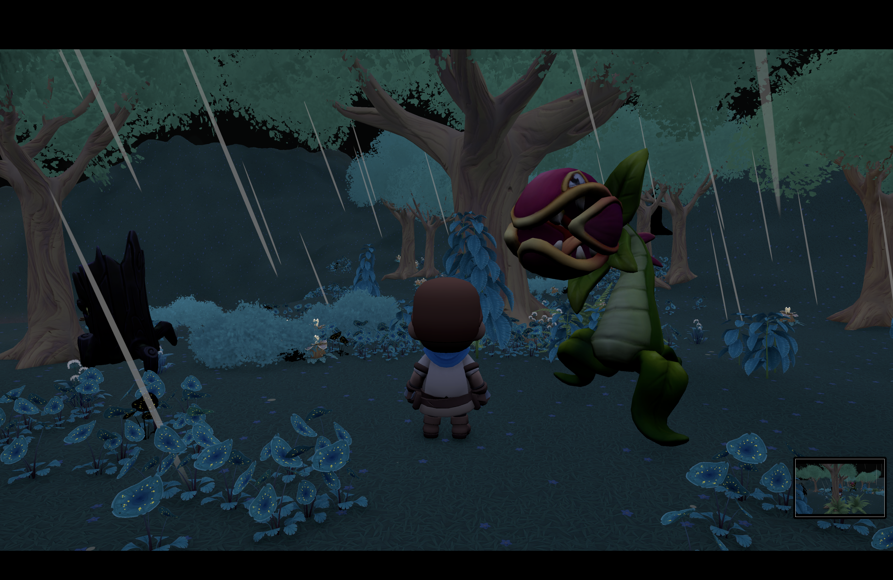
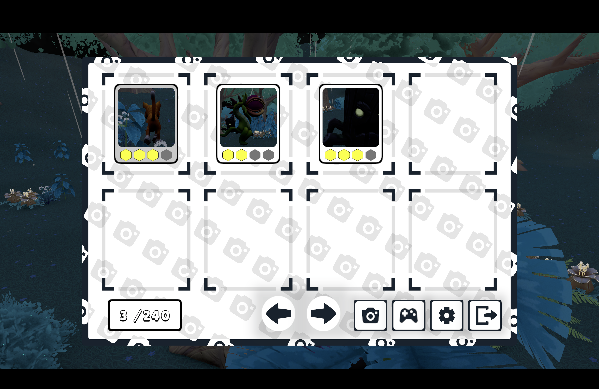

Photography Demo (2025)
This demonstration showcases one of my earliest personal projects: a photography system that can be used within a game or simulation. This particular demo has the player walking around as a person, inspired by Pokémon Snap and TOEM — but the system is flexible enough to work as an in-game photo mode as well, allowing players to capture their favorite moments.
Made with Unity.


